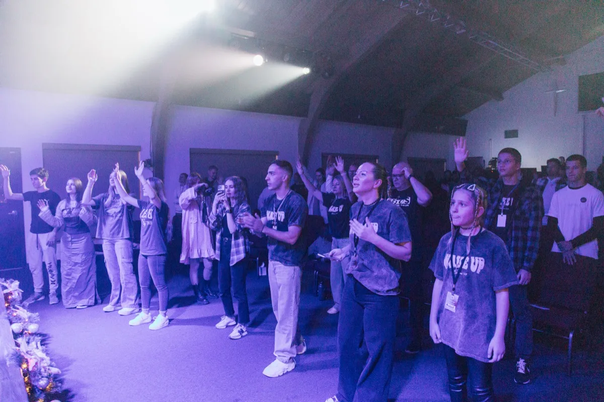

Возраст 0–12
KidsZone
Яркая, безопасная и радостная воскресная школа, где дети открывают любовь Бога через истории, поклонение и творчество.
Участвовать →Воскресенье — это только начало. Каждое служение — это сообщество, где настоящая жизнь и настоящая вера соединяются.
Яркая, безопасная и радостная воскресная школа, где дети открывают любовь Бога через истории, поклонение и творчество.
Участвовать →Место для настоящих вопросов, глубокой дружбы и открытия своей идентичности и призвания во Христе. Встречи и события для подростков и молодёжи.
Участвовать →Сообщество женщин, растущих вместе в вере, дружбе и призвании — через библейские занятия, ретриты и совместную жизнь.
Участвовать →Место заступничества и тихой встречи. Общие молитвенные вечера каждую среду, плюс открытая комната в течение всей недели.
Участвовать →Небольшие еженедельные встречи по всему городу, где завязываются настоящие дружбы и люди проживают жизнь вместе.
Найти группу →Используйте свои дары, чтобы вести церковь в присутствие Бога. Ищем страстных музыкантов, певцов и звукорежиссёров.
Прослушивание →KidsZone — полностью укомплектованное детское служение, которое проходит во время воскресного служения. Наша команда создаёт подходящую по возрасту, радостную среду, где дети от 0 до 12 лет открывают, что Бог любит их и имеет план для их жизни.
Каждую неделю: возрастное обучение, песни поклонения, игры, поделки и обсуждение в малых группах. Регистрация у стойки KidsZone у главного входа.
Расписание: Воскресенье 14:30 – 16:00
Связаться с командой →

Домашние группы — это небольшие встречи 8–15 человек, которые проходят еженедельно по домам и кофейням по всему Лос-Анджелесу. Здесь происходит настоящая общность: честные разговоры, совместные ужины, молитва и подлинная дружба.
Группы работают на русском языке и охватывают тематические библейские занятия и обсуждения проповедей. Новые группы формируются регулярно.
Расписание: Различные дни — свяжитесь с нами, чтобы найти ближайшую группу.
Найти группу →